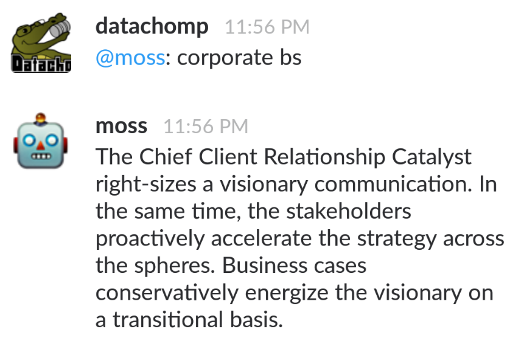
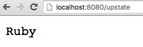
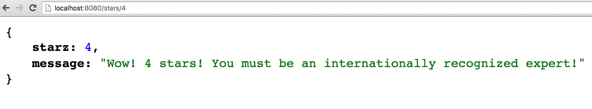

Intro to ChatOps with Lita
An Upstate Ruby lightning talk
May 25, 2016
About me
Places I have not worked
- GitHub
- StackStorm
- Atlassian
- FlowDock
- PagerDuty
- VictorOps
About me
Places I have worked
A number of companies that are not world famous. (Yet?)
Currently, Clown Shoes Wrangler at RaiseMore.
Why listen to me?

ChatOps
What is it even?
Communication
Automation
- Repeatable
- Reliable
Transparency
Fun
ChatBots
Choices
- Hubot - CoffeeScript, JavaScript
- Lita - Ruby
- Err - Python
ChatBots
What it do?
- Hear
- Respond
Hear
Example 1
Hear
Example 2

Respond
Example 1
Respond
Example 2
Respond
Example 3

Respond
Example 4
Respond
Example 5

WARN:
Regular Expressions
Love 'em or hate 'em, you can't avoid 'em
If you do hate 'em...
I've got you!
<3 <3 <3

Hello, Lita

Why Lita?
- Runs on Ruby
- Many chat adapters available
- Leverage Ruby ecosystem:
- RubyGems
- Bundler
Requirements
- Ruby 2.x
- or JRuby 9.0.0.0+
- or Rubinus 2+
- Redis 2.6+
Install Lita
gem install lita
Create your bot
lita new
$ lita new
create lita
create lita/Gemfile
create lita/lita_config.rb
Run your bot
lita start
Name your bot
lita_config.rb
Lita.configure do |config|
# The name your robot will use.
config.robot.name = "Johnny Five"
end
Lita.configure do |config|
# The name your robot will use.
config.robot.name = "Johnny Five"
endName your bot
Action shot

Plugins
Getting more out of Lita
- Adapters
- Handlers
- Extensions
Adapters
| * Slack | * HipChat |
| * Flowdock | * IRC |
| * Campfire | * Chatwork |
| * Gitter | |
| * Telegram | * idobata |
| * Telegram (another!) | * Tox |
| * VKontable | |
| * Discord |
Make a chat bot
Because Lita is better with friends!
Adapter Config
lita_config.rb
Lita.configure do |config|
config.robot.adapter = :slack
config.adapters.slack.token = "my-token"
end
Gemfile
source "https://rubygems.org"
gem "lita"
gem "lita-slack"
Lita.configure do |config|
config.robot.adapter = :slack
config.adapters.slack.token = "my-token"
end
source "https://rubygems.org"
gem "lita"
gem "lita-slack"
Handlers
What it do?
- Chat routes
- HTTP routes
- Event routes
Handlers
- Install a gem*
- Roll your own
Chat route "hear"
handlers/ping.rb
module Lita
module Handlers
class Ping < Handler
route(/ping/, :pong,
help: { "ping" => "replies back with PONG" })
def pong response
response.reply "PONG"
end
Lita.register_handler(self)
end
end
end
module Lita
module Handlers
class Ping < Handler
route(/ping/, :pong,
help: { "ping" => "replies back with PONG" })
def pong response
response.reply "PONG"
end
Lita.register_handler(self)
end
end
endlita_config.rb
require './handlers/ping.rb'
Lita.configure do |config|
# my config
end
require './handlers/ping.rb'
Lita.configure do |config|
# my config
end
Chat route "hear"
command defaults to false
module Lita
module Handlers
class Ping < Handler
route(/ping/, :pong,
command: false, # defaults false
help: { "ping" => "replies back with PONG" })
def pong response
response.reply "PONG"
end
Lita.register_handler(self)
end
end
end
module Lita
module Handlers
class Ping < Handler
route(/ping/, :pong,
command: false, # defaults false
help: { "ping" => "replies back with PONG" })
def pong response
response.reply "PONG"
end
Lita.register_handler(self)
end
end
endChat route "respond"
handlers/gnip.rb
module Lita
module Handlers
class Gnip < Handler
route(/gnip/, :gnop,
command: true, # "respond"
help: { "gnip" => "replies back with GNOP" })
def gnop response
response.reply "GNOP"
end
Lita.register_handler(self)
end
end
end
module Lita
module Handlers
class Gnip < Handler
route(/gnip/, :gnop,
command: true, # "respond"
help: { "gnip" => "replies back with GNOP" })
def gnop response
response.reply "GNOP"
end
Lita.register_handler(self)
end
end
end
lita_config.rb
require './handlers/gnip.rb'
# the rest...
require './handlers/gnip.rb'
# the rest...
Chat routes in action
Hear
Lita > I say ping
PONG
Lita > lita ping
PONG
Respond
Lita > I say gnip
Lita > lita gnip
GNOP
Chat routes
response helpers
| reply | send message back to source (room or user) |
| reply_privately | send message back to user |
| matches | array of Regexp matches |
| match_data | MatchData from Regexp |
| args | array of args with the "command" removed |
| message | message object |
| user | user object |
| extensions | arbitrary data from Lita extension |
Helpers example
handlers/helpers.rb
module Lita
module Handlers
class Helpers < Handler
route(/helper[s|z] (\d*){1}/i, :puts_helper, command: true)
def puts_helper response
puts "matches: #{response.matches}"
puts "match_data: #{response.match_data}"
puts "args #{response.args}"
puts "message: #{response.message}"
puts "user: #{response.user}"
puts "extensions: #{response.extensions}"
response.reply_privately "Shh! This is private!"
response.reply "Hola!"
end
Lita.register_handler(self)
end
end
end
helpers.rb output
Lita > lita helpers 42
matches: [["42"]]
match_data: helpers 42
args ["42"]
message: #
user: #
extensions: {}
Shh! This is private!
Hola!
Lita > lita helpers 42 21
matches: [["42"]]
match_data: helpers 42
args ["42", "21"]
message: #
user: #
extensions: {}
Shh! This is private!
Hola!
Using args helper
handlers/stars.rb
module Lita
module Handlers
class Stars < Handler
route(/star[s|z] (\d*){1}/i, :star_rating, command: true,
help: { "stars <num>" => "replies with your star rating" })
def star_rating response
starz = response.args.first.to_i
if starz > 3
response.reply "Wow! #{starz} stars!\nYou must be an internationally recognized expert!"
else
response.reply "You are not your star count! We <3 you!"
end
end
Lita.register_handler(self)
end
end
endstars.rb output
Lita > lita stars 2
You are not your star count! We <3 you!
Lita > lita stars 4
Wow! 4 stars!
You must be an internationally recognized expert!
Chat routes
restrict_to
module Lita
module Handlers
class Destroyer < Handler
route(/destroy everything/, :destroy_it, command: true,
restrict_to: [:authorized_destroyers])
def destroy_it response
response.reply "Sweet! Let's break stuff!"
end
Lita.register_handler(self)
end
end
end
module Lita
module Handlers
class Destroyer < Handler
route(/destroy everything/, :destroy_it, command: true,
restrict_to: [:authorized_destroyers])
def destroy_it response
response.reply "Sweet! Let's break stuff!"
end
Lita.register_handler(self)
end
end
end
Authorization groups
lita_config.rb
Lita.configure do |config|
# add adapter-specific ids
config.robot.admins = ["42", "21"]
end
Lita.configure do |config|
# add adapter-specific ids
config.robot.admins = ["42", "21"]
endAuthorization groups
Admins in action
Lita > lita auth add Michelle to authorized_destroyers
Michelle was added to authorized_destroyers
Lita > lita auth remove Michelle to authorized_destroyers
Michelle was removed to authorized_destroyers
http client
module Lita
module Handlers
class Nerdbeers < Handler
route(/nerdbeers/i, :nerdbeers, command: true,
help: { "nerdbeers" => "replies with current nerdbeers agenda" })
def nerdbeers response
http_response = http.get "http://nerdbeers.com/api/"
agenda = MultiJson.load http_response.body
message = []
agenda['pairings'].each {|a|
message.push "Pairing ##{a['id']} => Topic: #{a['topic']} Beer: #{a['beer']}"
}
response.reply message.join "\n"
end
Lita.register_handler(self)
end
end
end
module Lita
module Handlers
class Nerdbeers < Handler
route(/nerdbeers/i, :nerdbeers, command: true,
help: { "nerdbeers" => "replies with current nerdbeers agenda" })
def nerdbeers response
http_response = http.get "http://nerdbeers.com/api/"
agenda = MultiJson.load http_response.body
message = []
agenda['pairings'].each {|a|
message.push "Pairing ##{a['id']} => Topic: #{a['topic']} Beer: #{a['beer']}"
}
response.reply message.join "\n"
end
Lita.register_handler(self)
end
end
endhttp client
In action...
Lita > lita nerdbeers
Pairing #1 => Topic: everything should be https Beer: coop f5
Pairing #2 => Topic: Google IO Beer: native amber
Pairing #3 => Topic: home automation in 2016 Beer: goose island ipa
HTTP routes
Supported verbs
| * HEAD | * GET |
| * POST | * PUT |
| * PATCH | * DELETE |
| * OPTIONS | * LINK |
| * UNLINK |
HTTP GET
module Lita
module Handlers
class UpstateHttp
extend Lita::Handler::HTTPRouter
http.get "/upstate", :ruby
def ruby request, response
response.body << "Ruby"
end
Lita.register_handler(UpstateHttp)
end
end
end
module Lita
module Handlers
class UpstateHttp
extend Lita::Handler::HTTPRouter
http.get "/upstate", :ruby
def ruby request, response
response.body << "Ruby"
end
Lita.register_handler(UpstateHttp)
end
end
end
GET /upstate
HTTP GET
Advanced routing
module Lita
module Handlers
class StarsHttp < Handler
http.get "/stars/:num", :star_rating
def star_rating request, response
starz = request.env["router.params"][:num].to_i
message = starz < 4 ? "You are not your star count! We <3 you!" :
"Wow! #{starz} stars!\nYou must be an internationally recognized expert!"
body = { starz: starz, message: message }
response.headers["Content-Type"] = "application/json"
response.write MultiJson.dump(body)
end
Lita.register_handler(self)
end
end
end
GET /stars/4
Wait there's more!
- Event routes
- Mixins
- Helpers
- Timers
- Configuration
- Templates
Lita generators
lita handler
$ lita handler lita-openworks-status-handler
Do you want to test your plugin on Travis CI? ("yes" or "no", default is "no") no
Do you want to generate code coverage information with SimpleCov and Coveralls.io? ("yes" or "no", default is "no") no
create lita-openworks-status-handler/lib/lita/handlers/openworks_status_handler.rb
create lita-openworks-status-handler/lib/lita-openworks-status-handler.rb
create lita-openworks-status-handler/spec/lita/handlers/openworks_status_handler_spec.rb
create lita-openworks-status-handler/spec/spec_helper.rb
create lita-openworks-status-handler/locales/en.yml
create lita-openworks-status-handler/templates/.gitkeep
create lita-openworks-status-handler/Gemfile
create lita-openworks-status-handler/lita-openworks-status-handler.gemspec
create lita-openworks-status-handler/.gitignore
create lita-openworks-status-handler/Rakefile
create lita-openworks-status-handler/README.md
If you plan to release this plugin as open source software, consider adding a LICENSE file to the root of the repository.
Common open source software licenses can be found at http://choosealicense.com/.
Resources
Lita
- Lita - lita.io
- Lita plugins - plugins.lita.io
- Lita docs - docs.lita.io
Resources
ChatOps
- VictorOps - ChatOps for Dummies
- GitHub
- StackStorm - Chatops Pitfalls and Tips
- Atlassian - What is ChatOps? A guide to its evolution, adoption, and significance
- FlowDock - ChatOps: Everything about deployments right inside your chat
- PagerDuty - So, What is ChatOps? And How do I Get Started?
- reddit.com/r/chatops
Thank You!
Intro to ChatOps with Lita
An Upstate Ruby lightning talk
Sample Scripts https://github.com/ryoe/upstate-ruby-demo
Comments or Questions?
@ryoe_ok on Twitter
ryoe on GitHub